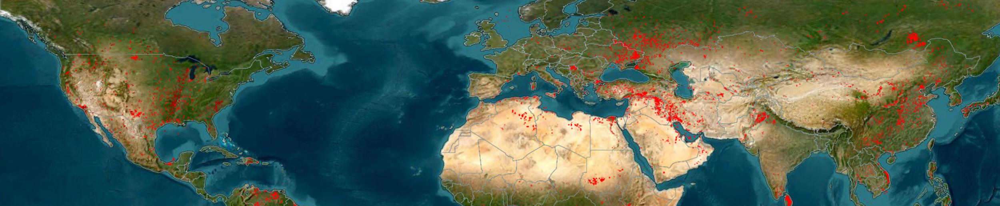
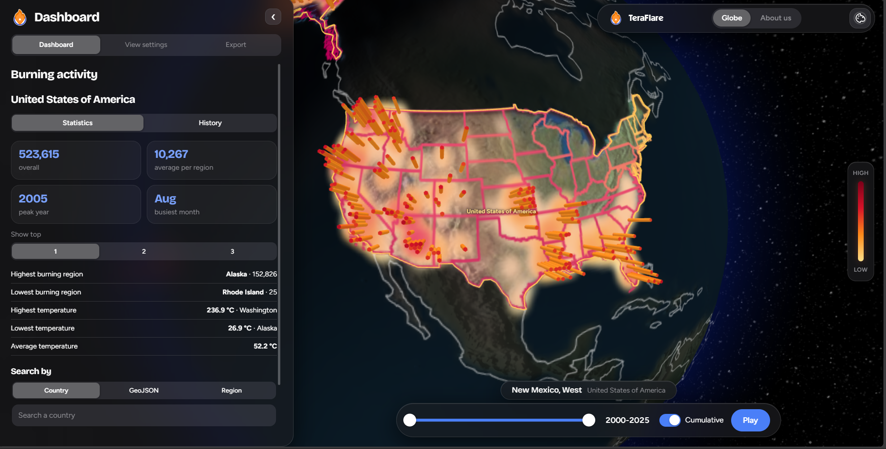

About Us
Aurora Rocketeers is an aspiring group of Computer Engineers from the Philippines, eager to solve problems on Earth and beyond. TeraFlare is their solution for the NASA Space Apps Challenge, entitled "Harmonization of MODIS and VIIRS Hot Spots". Their goal is to give people a centralized and user-friendly application that depicts one clear picture of where burning happens and when.
The Problem

Satellites have tracked active fires for more than twenty years, but the record is split between two sensors, MODIS and VIIRS. Their files use different confidence scales and brightness columns, so they can't be compared directly.
How It Works

Run the local preprocessing script on FIRMS CSV files in the dataset folder. It harmonizes MODIS and VIIRS confidence into low, nominal and high categories and creates the compact files loaded by the browser. Explore country-attributed activity with the heat map, H3-based 3D hexagon columns, or raised hotspot markers. Use the timeline, sensor and confidence filters, then select a country or location to inspect historical and seasonal patterns.
Data
FIRMS NASA EARTHDATA: Fire Information for Resource Management System. The map and its global counter omit cells without a country assignment; heat-map smoothing can extend slightly past coastlines. When MODIS and VIIRS data overlap from 2012 onward, an optional global count-rate adjustment scales VIIRS to the MODIS overlap total. This is a relative adjustment, not a correction for differences in sensor sensitivity or burned area. Preprocessing and visualization run locally; the app has no project backend.
Team
Project / Scrum Leader Alvin John Dano
Data Scientist
DevOps Engineer
Backend Developer
Frontend Developer